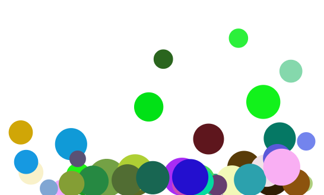
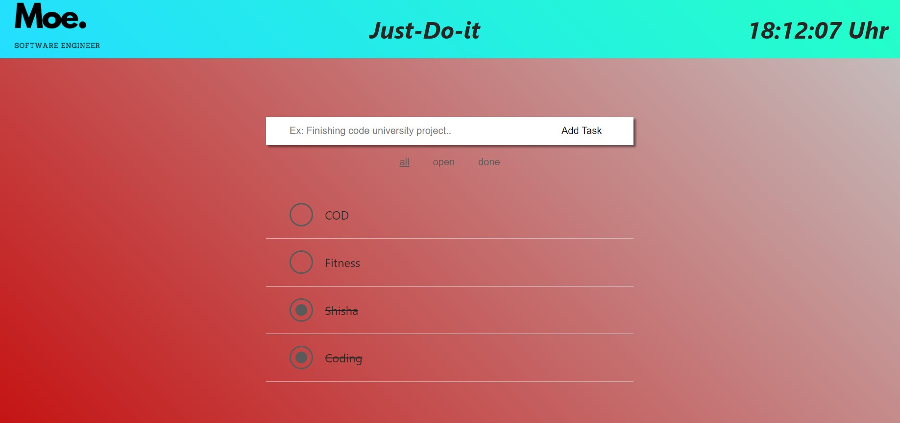

Click here or on the image if you still want to think about what (To-Do). The balls jumping should make you space-out but not for long because just like everything spacing out should not be forever therefore after a certain time the balls will slowly anchor down, after you hopefully you have anchored your thoughts.
Click here or on the image to go to the To-Do-App, there you can write down the tasks that you did, will do or done already.
